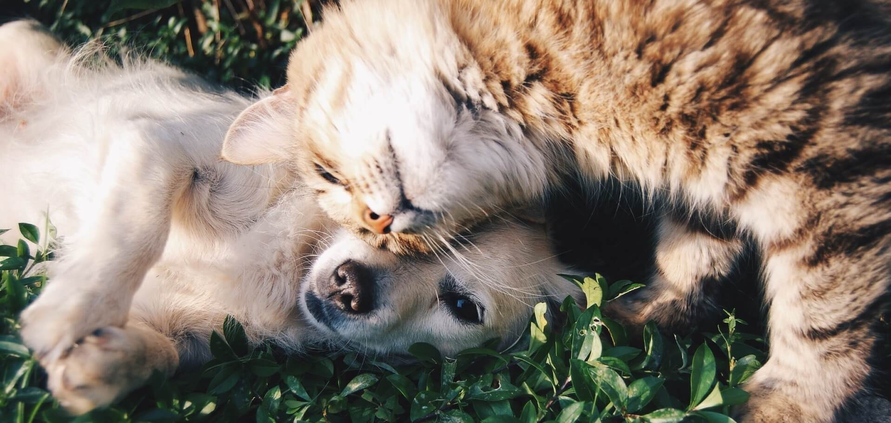

Articole
Sterilizarea si castrarea
de Denisa Pop
Postat in Septembrie 28, 2017 la 10:00 AM

La cabinetul veterinar Pet Love Vet avem grija ca animalele dumneavoastra de companie sa fie ingrijite asa cum se cuvine. De aceea, medicii nostri veterinari va vin in ajutor cu serviciul de castrare al cainilor. Cu toate ca aceasta interventie chirurgicala este privita cu suspiciune de multi stapani de animale, ea este absolut necesara.
Mai multe »Cum trebuie hranit in mod corect un caine?
de Paula Pop
Postat in Iunie 12, 2017 la 11:00 AM

Alimentatia cainelui joaca un rol decisiv pentru starea lui de sanatate, si difera in functie de varsta, nivel de activitate, eventuale alergii sau afectiuni. Este foarte importanta alegerea unui tip de mancare uscata de calitate, sau prepararea mancarii in casa cu ingrediente recomandate cainilor.
Mai multe »